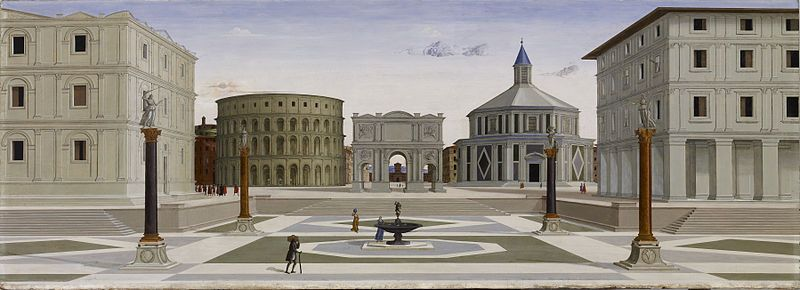
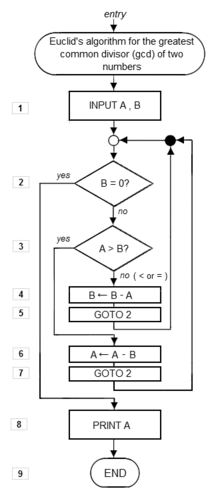
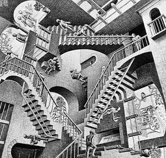
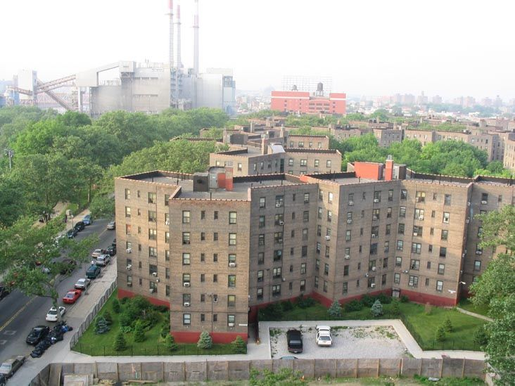
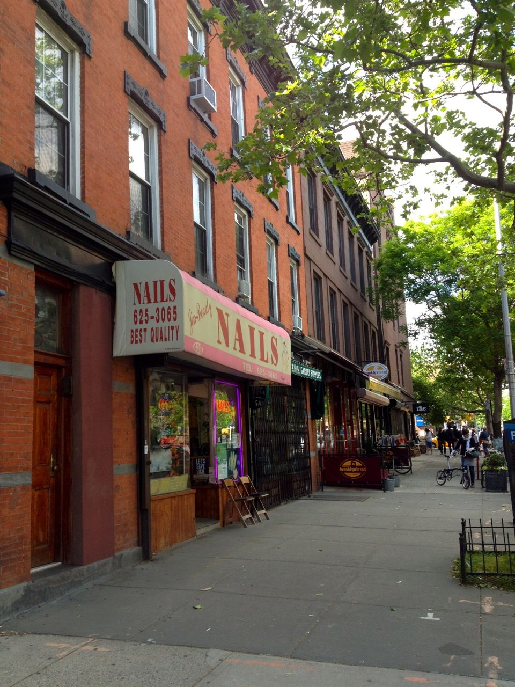
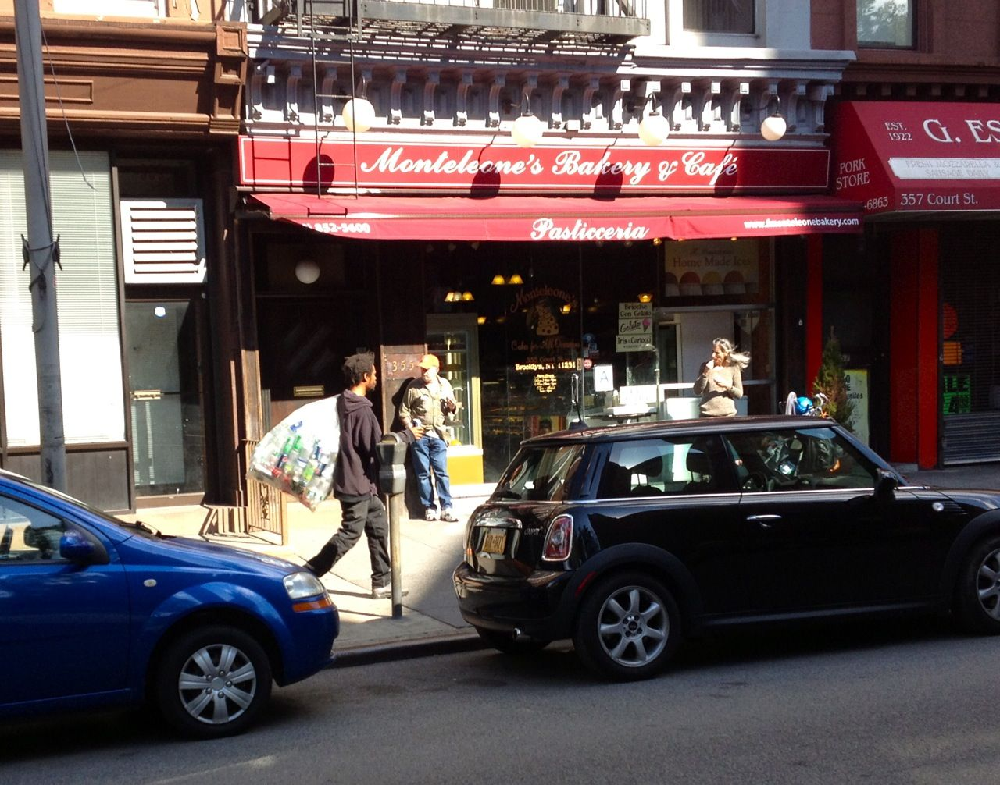
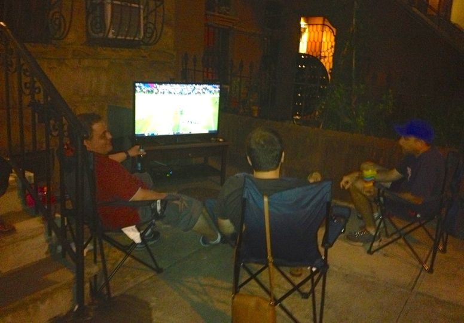
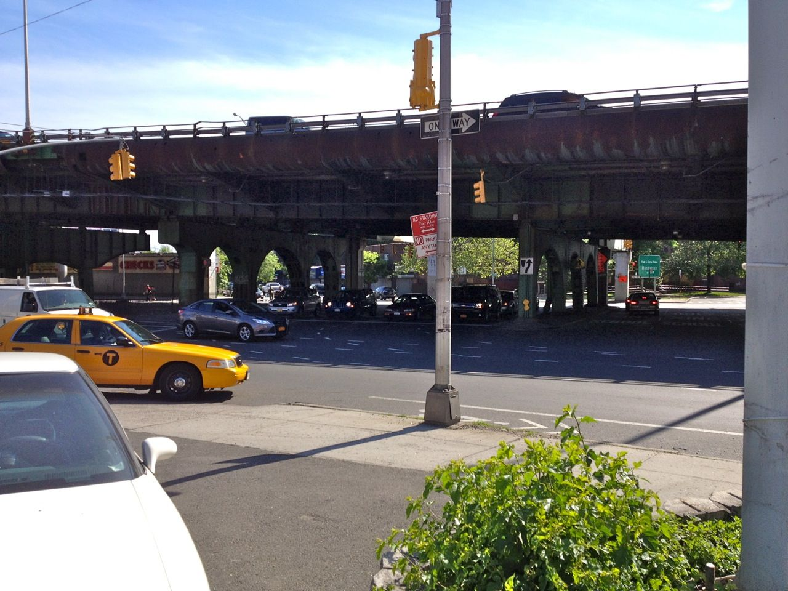

Contents · 24 slides
- Jane Jacobs’s Critique of Urban Rationalism
- What Is Rationalism?
- The Concrete Is Prior to the Abstract
- The Rationalist Cannot Achieve His Goal
- But He Will Hamper Successful Practice in Trying to Do So
- This Does Not Mean Current Practice Is Sacrosanct
- The Aristotelian Physician
- Urban Rationalists
- Le Corbusier
- Brasilia
- Versus a Spontaneously Ordered City
- Urban Housing Projects
- Jane Jacobs as Urban Physician
- Mixed Uses
- Eyes on the Street
- Eyes on the Street
- Eyes on the Street
- Eyes on the Street
- Eyes on the Street
- Public-Private Transition
- Public-Private Transition
- Public-Private Transition
- Border Vacuums
- Conclusion
1 Jane Jacobs’s Critique of Urban Rationalism
- Gene Callahan
- Purchase College

2 What Is Rationalism?
- The rationalist approach is the conviction that every essential aspect of any human practice can be conveyed adequately by means of a ‘guidebook’ comprising explicitly stated rules, formalized technical procedures, and general, abstract principles.

3 The Concrete Is Prior to the Abstract
4 The Rationalist Cannot Achieve His Goal

5 But He Will Hamper Successful Practice in Trying to Do So
- Collingwood: ‘A person may think he is a poached egg; that will not make him one; but it will affect his conduct, and for the worse.’ — R. G. Collingwood, Speculum Mentis (1924)
6 This Does Not Mean Current Practice Is Sacrosanct
- An appreciation of spontaneous order does not entail denying that intellectual criticism of the present state of some practice has a genuine and vital role to play in that order. An expert can diagnose and treat ills in her area of expertise… which might be morality!
7 The Aristotelian Physician
- ‘to cure is not to transform, it is not to turn the patient into a different sort of being; it is to restore to him such health as he is naturally capable of enjoying’ — Michael Oakeshott, on Aristotle, Lectures in the History of Political Thought (2006), p. 114
9 Le Corbusier
- “The despot is not a man. It is the Plan. The correct, realistic, exact plan, the one that will provide your solution once the problem has been posited clearly, in its entirety, in its indispensable harmony” (quoted in Scott, 1998: 112).
11 Versus a Spontaneously Ordered City
- Many plans, modestly devised!
12 Urban Housing Projects

13 Jane Jacobs as Urban Physician
- We might well, then, call Jacobs an “urban physician,” to invent a term to oppose to “urban planner”: she sought, like a good Aristotelian physician, not to turn the city she examined into a different sort of being, but to restore to it such health as it is naturally capable of enjoying. This requires deep thought and much observation; what it does not entail is dreaming up visions of imaginary cities and trying to transform the actual city one is charged with treating into a realization of that vision.
14 Mixed Uses

17 Eyes on the Street

20 Public-Private Transition
21 Public-Private Transition

22 Public-Private Transition
23 Border Vacuums

24 Conclusion
- Jane Jacobs was a keen observer of modern city life, highly alert to the concrete circumstances that tend to create a modern urban life that might allow for the flourishing of the inhabitants of the modern city. Her keen awareness of such factors drove her critique of the unmoored abstractions that underlay much of the urban planning efforts of her time. As such, her work offers empirical evidence supporting the more theoretical case through which Michael Oakeshott condemned the rationalist misunderstanding of human conduct.